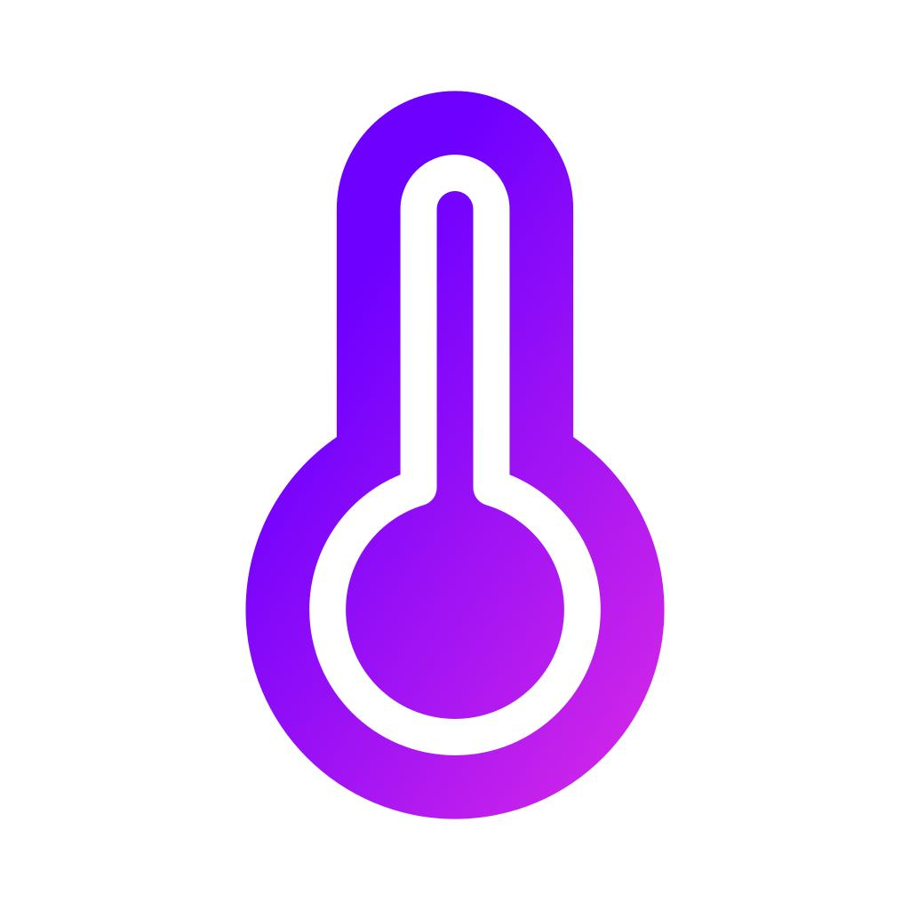

Интеллектуальный контроль температуры
Фен измеряет температуру воздуха более 40 раз в секунду и автоматически регулирует нагрев, защищая волосы от перегрева и сохраняя их естественный блеск.
Уникальные инженерные решения делают Dyson Supersonic™ одним из лучших фенов в мире.
Фен измеряет температуру воздуха более 40 раз в секунду и автоматически регулирует нагрев, защищая волосы от перегрева и сохраняя их естественный блеск.

Компактный цифровой двигатель вращается со скоростью до 110 000 оборотов в минуту, создавая мощный поток воздуха для быстрой и эффективной сушки волос.

Все насадки крепятся с помощью мощных магнитов. Их можно быстро менять и поворачивать во время укладки без лишних усилий.

Двигатель расположен в рукоятке, благодаря чему фен отлично сбалансирован, удобно лежит в руке и меньше нагружает кисть при длительном использовании.
Технологии, которые делают ежедневную сушку быстрее, безопаснее и комфортнее.

Измерение температуры более 40 раз в секунду защищает волосы от перегрева.
Компактный цифровой двигатель обеспечивает сильный поток воздуха и высокую скорость сушки.
Быстрая замена насадок одним движением без дополнительных креплений.
Оригинальный Dyson Supersonic™ с гарантией производителя и быстрой доставкой.